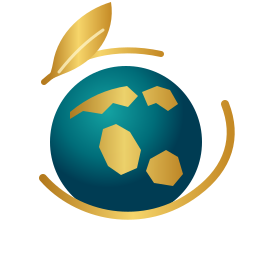

Calma en 5 minutosMeditación · 5 min
HOY CONTIGO
Hola, Ana.
Me alegra verte aquí.
¿En qué te acompaño hoy?
TU MOMENTO DE HOY
Una pausa para reconectar

MEDHEALING TOURS
Tu bienestar te acompaña siempreBienestar integral, respiración consciente y acompañamiento transformacional en una misma experiencia.
Sugerencias para ti
Hoy en MedHealing
● En vivo ahora
Meditación y reflexión diaria
Hoy · 7:00 pm · 40 min · Encuentro guiado
Para volver más tarde
Grabación de hoy
Vuelve al encuentro a tu ritmo cuando lo necesites.
Para esta noche
Soltar el día y prepararte para descansar · 20 min.